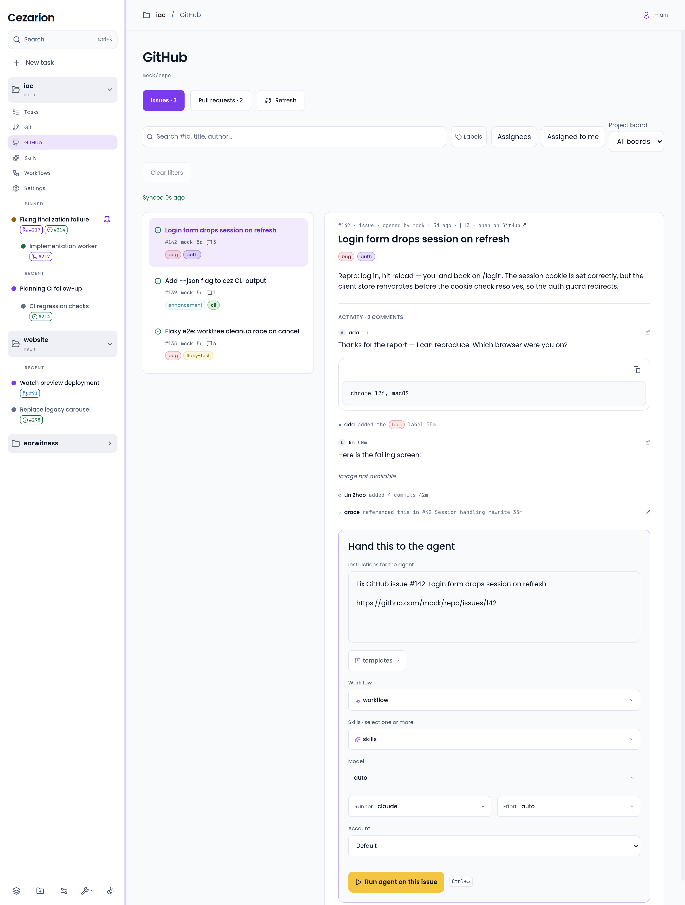
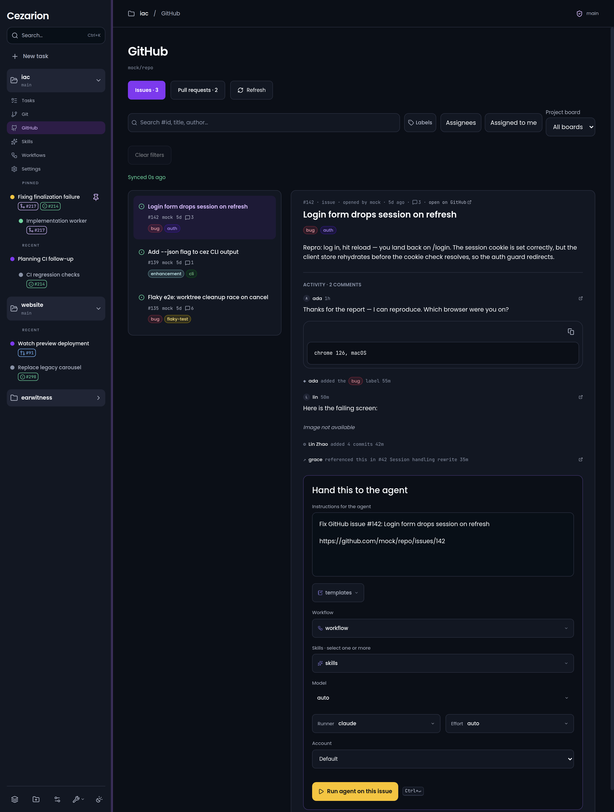
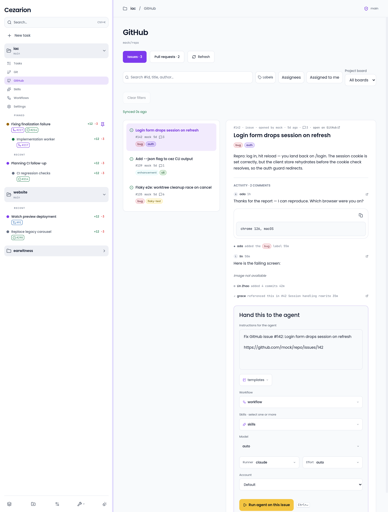
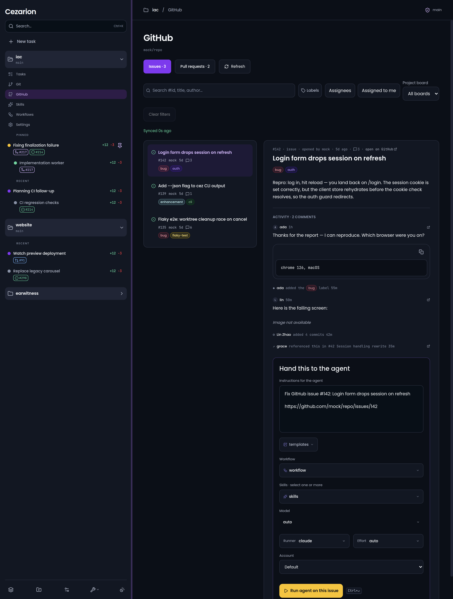
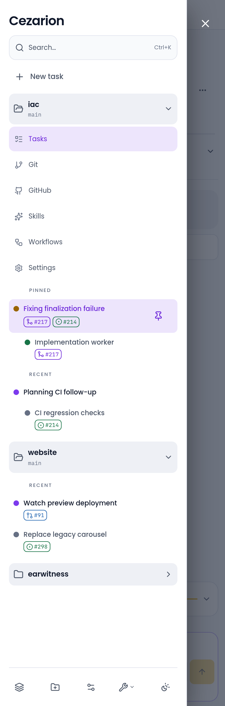
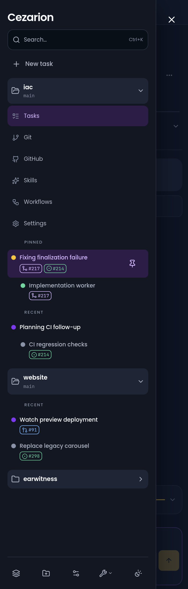

R1. Sidebar minimum / default · 264px · Desktop light
Approved source · t5OS8c
Built cockpit · desktop-light-264

Desktop comparisons clip to the shared sidebar. Mobile comparisons show the whole drawer viewport. Both PNGs are genuine 2× captures, displayed at CSS size. Main route content is outside this worker’s scope.










